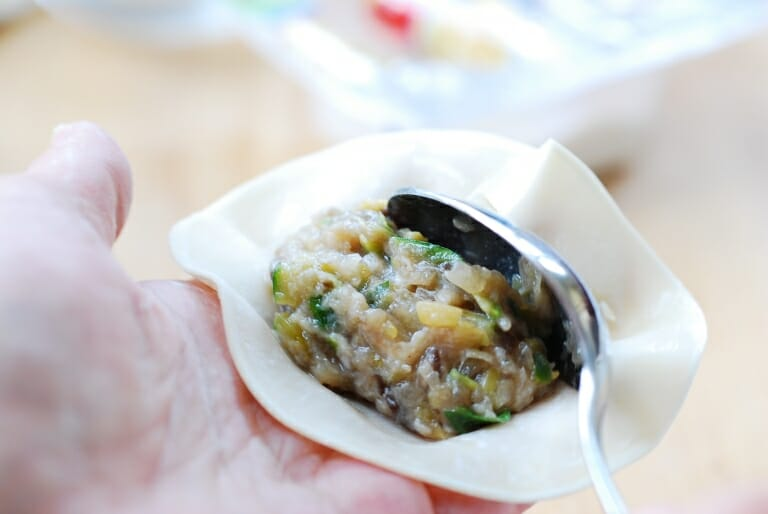
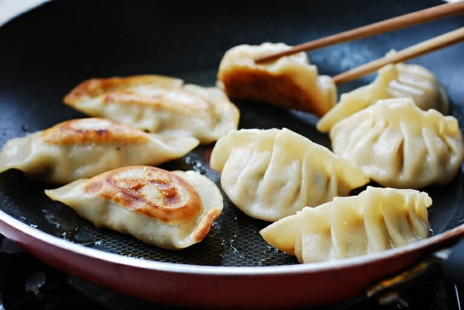

Mandu

Mandu, or mandoo, are dumplings in Korean cuisine. Mandu can be steamed, boiled, pan-fried, or deep-fried. The styles also vary across regions in the Korean Peninsula.
Mandu is a general term for Korean dumplings that consist of a savory filling wrapped in thin wrappers. I’ve been making some variation of this Korean dumpling recipe for decades.
They are so delicious and versatile! Hope you’ll try making your own dumplings at home with this easy step-by-step mandu recipe.
Ingredients
- 1 package dumpling skins/wrappers (about 40 pieces), 만두피 (mandu pi)
For the filling
- 8 ounces zucchini finely chopped
- 10 ounces green cabbage finely chopped
- 4 ounces fresh mushrooms finely chopped (shiitaki preferably)
- 1/2 medium onion finely chopped
- 2 scallions finely chopped
- 1/2 pound ground pork or other meat if preferred
- 1/4 pound ground beef
- 1 tablespoon minced garlic
- 1 to 2 teaspoons finely minced ginger or juiced
- 1 tablespoon soy sauce
- 1 tablespoon sesame oil
- 1 egg
- 1/4 teaspoon salt to season the filling and more for salting vegetables
- ⅛ teaspoon pepper
For the sauce
- 1 tablespoon soy sauce
- 1 teaspoon vinegar
- 1 tablespoon water
- 1/2 teaspoon sugar
- pinch of black pepper
- pinch of red pepper flakes gochugaru
Instructions
- Finely chop zucchini and cabbage.

- In two separate bowls, generously sprinkle salt over the chopped zucchini and cabbage and set aside (for at least 15 minutes) while preparing other ingredients. (This process will draw out water, soften the texture, and add flavor.) Squeeze out as much water as possible from the salted zucchini and cabbage by hand. Transfer to a large mixing bowl.

- Prepare all the remaining ingredients and add to the mixing bowl. Mix all ingredients well with your hand.

- Place one heaping teaspoonful of the filling on a wrapper. Wet the edges of the wrapper with water and seal tightly (pushing the air out with your fingers) into a half-moon shape. Repeat this process until all the filling/wrappers are used.

Gun mandu (pan fried)
- Heat the pan with 2 tablespoons of vegetable oil over medium high heat. Add the dumplings, making sure they aren’t touching each other. Fry for 1 – 2 minutes, until the bottoms are golden brown. Add 1/3 cup of water to the pan, and cover immediately with a lid. Reduce the heat to medium low, and steam for 4 to 5 minutes. Or cook 2 - 3 minutes on each side over medium heat until golden brown without adding water. If the dumplings are frozen, cook a little longer.

Tuigin mandu (deep-fried dumplings)
- Heat a deep fryer or skillet with about 2-3 inches of canola or vegetable oil over medium-high heat to 350°F. Fry the dumplings for 2-3 minutes until golden brown.
Jjin mandu (steamed)
- Steam the dumplings for about 10 minutes in a steamer (12 minutes if frozen). Make sure to line the steamer with a wet cheesecloth or cabbage leaves to prevent the mandu from sticking.
Mul mandu (boiled)
- Bring a pot of water to a boil. Add mandu (stirring gently so they don’t stick to the bottom of the pot) a few at a time, and cook until all of them come up to the surface. Continue to cook for another minute or two.
Notes
How to freeze dumplings: Place mandu pieces on a tray without pieces touching and freeze for about an hour before storing them in a freezer bag. Frozen mandu don't need to be thawed before being cooked. Just cook a little longer.